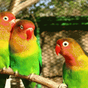
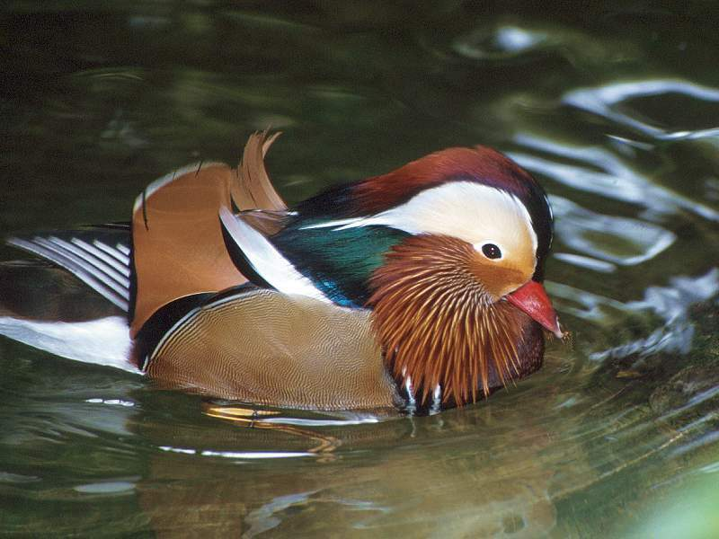
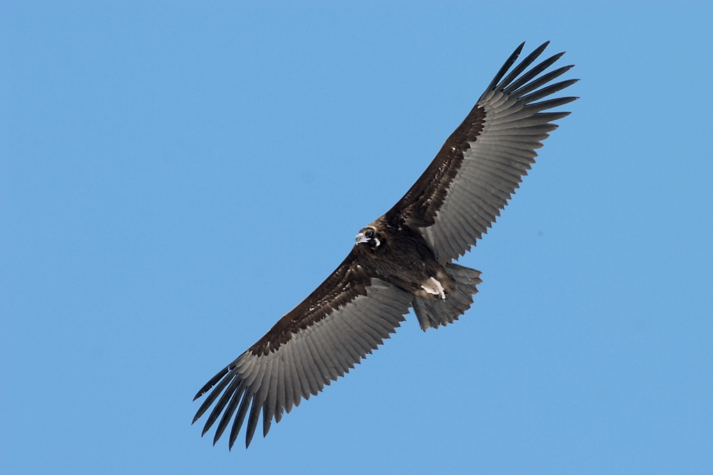
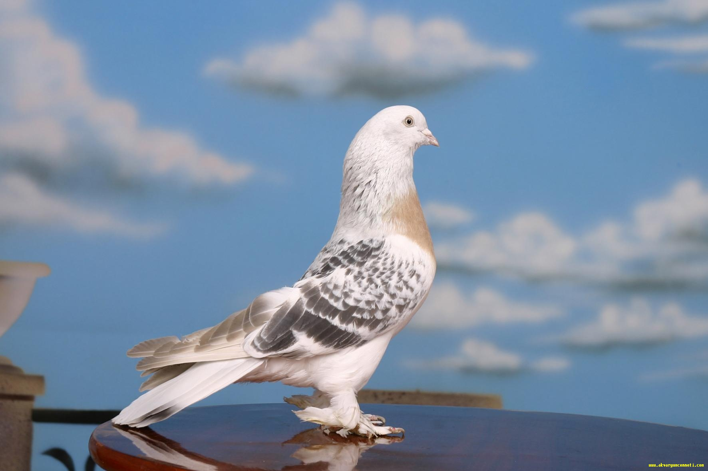
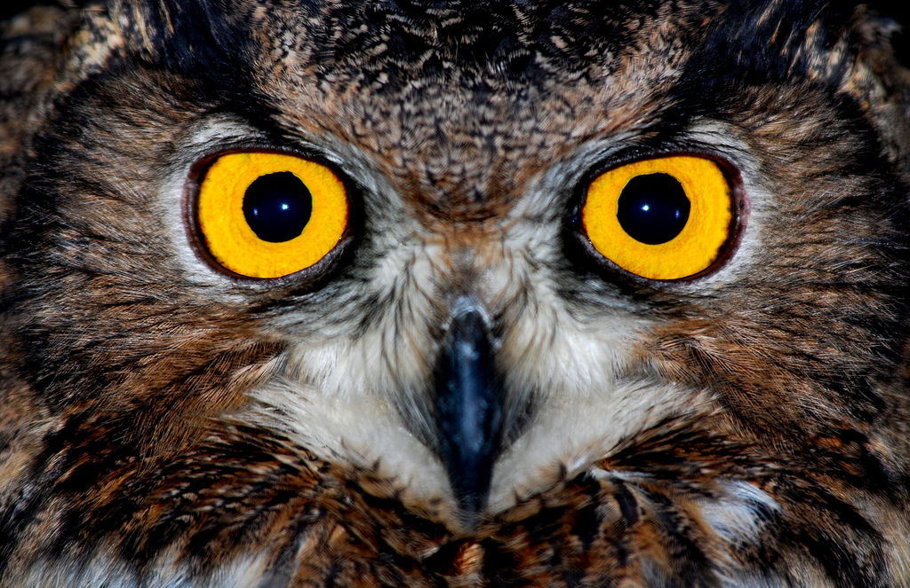
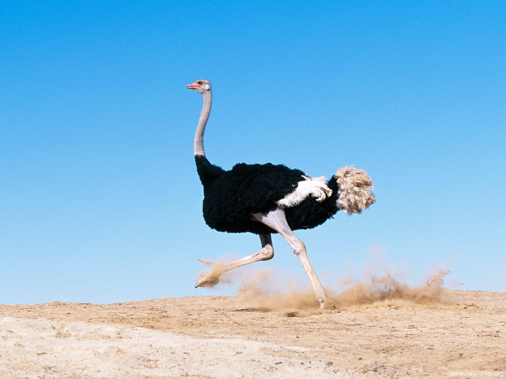
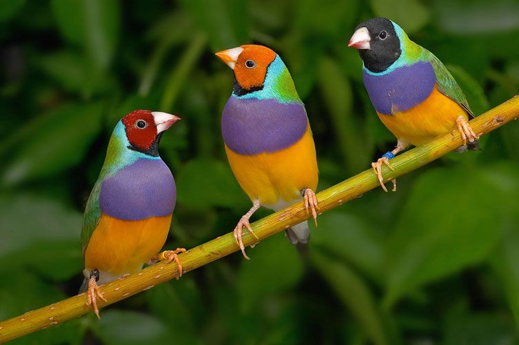
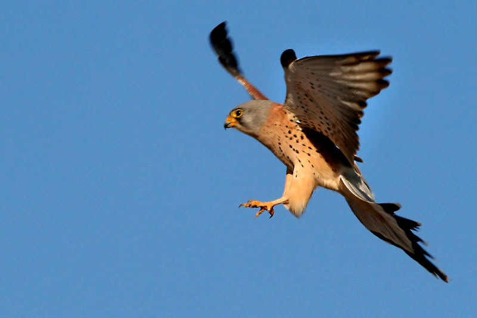

|  |
Kırmızı Ara Papağanı fiyatları se 100tl-1500tl arası
Papağan türleri arasında yaklaşık olarak 90 – 95 cm lik bir boya sahip olan bu papağan türü, en büyük papağanlar arasında yer almaktadır. Orta Amerika’da güney kısımlarda ve Bolivya ile Paraguay bölgelerinde doğal olarak yaşamlarını sürdürmektedirler. Evlerde bakımı zor olan bu papağan türünü küçükken alırsanız evcilleştirildiğinde oldukça iyi bir dost olmaktadırlar. Kafes ortamında yaklaşık olarak 50 ila 60 yıl yaşayabilmektedirler. Sarı Mavi Ara papağanı
|
|  |
Angut kuşu fiyatları ise 150-1200tl arası
Angut kuşu, kahverengi gövdeye sahip bir kuş türüdür. Beyaz başlı olup siyah kuyruklu olan angut kuşu, evcilleştirilebilmektedir. Ördeği anımsatan angut kuşu, 58 – 70 cm boylarında olup göçebe bir kuş türüdür. Angut kuşları son derece sadakatli bir kuş türü olma özelliği taşımaktadır. Erkek angutların boyunlarında siyah bir halka olup dişilerde göz çevresi veya boyun kısımları beyaz olmaktadır.
|
|  |
Akbaba fiyatları ise 1350-12000tl arası
Yırtıcı bir kuş türü olan Akbaba, oldukça iri bir hayvandır. Başları büyük olan akbabaların aynı zamanda da keldir. Kursakları ise büyüktür. Yassı tırnaklara sahip olan akbabalar, iri ayaklara da sahiptirler. Gagaları ise oldukça güçlü olan akbabalar, leşle beslenen hayvanlardır. Güçlü ayakları ve gagaları da onlara nu konuda oldukça önemli destek sağlamaktadır. Tropikal ve okyanus adaları dışında tüm tropikal ve ılıman bölgelerde yaşamlarını sürdüren akbabalar, dağlık ya da çıplak arazilerde yaşam sürer |
|  |
Taklacı Güvercin fiyatları ise 150-1200tl arası
Taklacı türünde olan bir güvercindir. Bal renginde olduğu için ballı adını almıştır. Kökeni güneydoğudur. Ayrıca Ballı taklacı güvercin olarak da adlandırılmaktır. Kalın boyunlu , beli ve göğsü diğer güvercinlere nazaran geniştir. Kanatlarında şeritler olabilir, en değerlisi kanadında 3 şerit bulunanlarıdır bunlar mühürlü cins olarak adlandırılmaktadır. Kısa mesafede ve yükselirken bile takla atabilir, uzun süreli uçuşlar yapabilir. 7. aydan itibaren çiftleşmeye başlayabilir. |
|  |
Baykuş
Gece yırtıcıları takımdan olan baykuş, büyük bir başa sahip olan tülü bir kuş türüdür. Geceleri avlanmaktadır. 60 ila 70 yıl kadar yaşayabilmektedirler. 18 – 70 cm boylarına sahiptirler ve Antarktika dışında dünyanın her yerinde yaşamaktadırlar. Kanatları oldukça uzun ve enli olan baykuşların kuyrukları ise kısadır. Ayrıca bazı baykuşların kanat açıklığı bir insan boyu kadar olabilir. Keskin pençeler eve kıvrık bir gagaya sahip olan baykuşlar, tırnakları kancalı olup parmakları ise dönerlidir.
|
|  |
Deve kuşu, fiyatları ise 1500-12000tl arası
kuş türleri arasında uçmayan bir tür olma özelliği taşımaktadır. Struthio türünün tek örneği olan deve kuşu, kuşlar arasında ne hızlı koşabilen bir kuş türüdür. En büyük yumurta da kuşlar arasında sadece deve kuşundadır. 2 – 2,5 metre boyunda olan deve kuşu, 130 – 150 kg ağırlığındadır. Tepeli deve kuşu tehlikeli türler arasında yer almakta olup, attığı tekmeler ve yerden 1,80 metre zıplayabilmesi sebebi ile tehlikelidir. Bu kuş türü zebra gibisinden memelilerle dolaşmaktadır. Kendilerini korumak için böyle yapan deve kuşları, 15 – 60 arası yumurta çıkarırlar.
|
|  |
İspinoz fiyatları ise 1000-7200tl arası
İspinoz kuşu ispinozgiller familyasına ait olan bir kuş türüdür. Büyüklüğü serçe kuşu büyüklüğünde olan ispinoz kuşu kafeste beslenebilir, oldukça güzel ötücü kuşlardan birisi olma özelliği taşır. Tepe ile ense kısımları mavi ve gri renklerinde olup, kuyruk çıkıntıları yosun yeşili rengindedir. İspinoz kuşlarının toplam yaşama süresi 24 yıldır. Konik gagalı bir kuş olan ispinoz, 16 cm boyunda ve 20 gr ağırlığında bir kuştur. Erkek ispinoz kuşları dişi ispinozlara göre parlak tüylere sahiptir.
|
|  |
Kerkenez fiyatları ise 1500-9300tl arası
zartalgiller familyasına ait bir kuş olan kerkenez, yırtıcı bir kuş türü olup 30 ila 35 cm boylarındadır. Gündüzleri avlanan bu yırtıcı kuş türü, 70 yıl kadar bir ömre sahiptir. Sivri kanatları ve ensiz kanatları olan kerkenez, ince uzun bir kuyruğu da bulunan bir kuş türüdür. Erkek kerkenez kuşunun baş kısmı maviye dönük gri renkte iken dişi kerkenezin ise kızıl kahverengiye çalmaktadır. Omuz ve sırt kısımları kızıla bakan kerkenez kuşlarının siyah benekleri de bulunmaktadır. Bıyığı da bulunan bu kuş türünün, kuyruğunun altı ise açık bir krem rengine sahiptir.
|